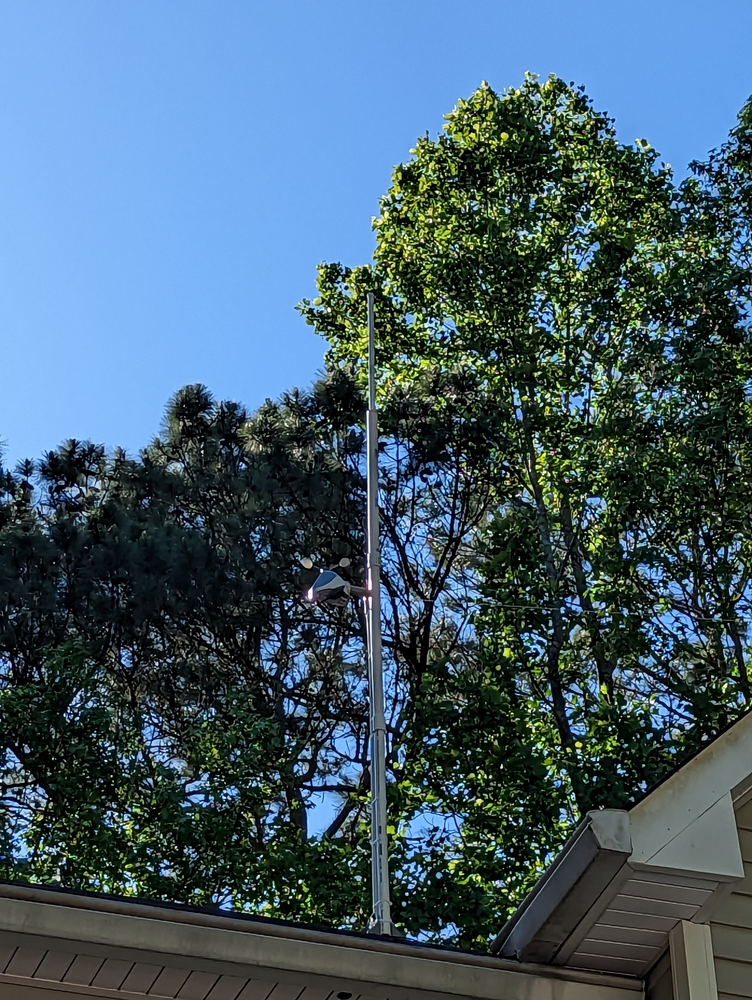
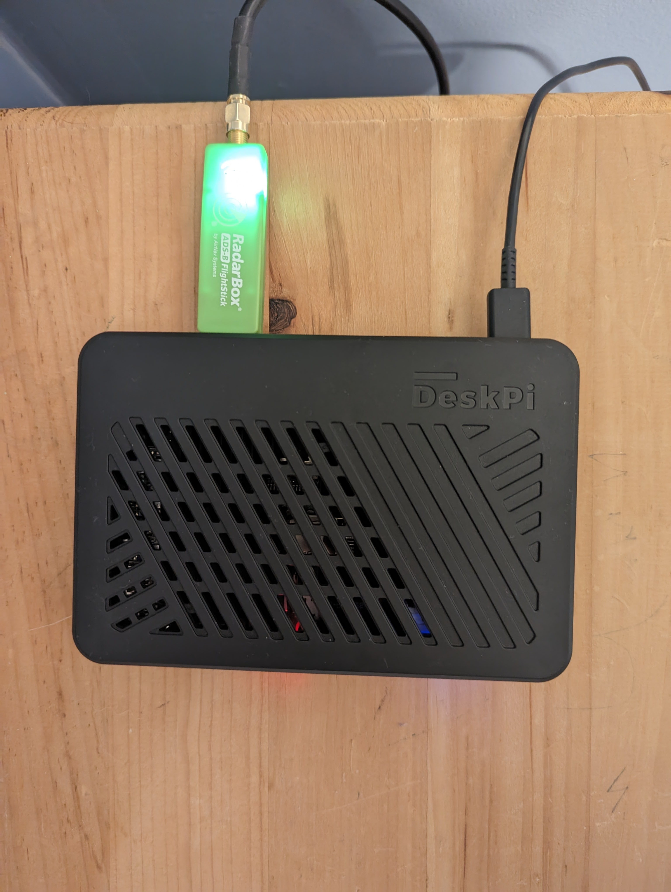

What is ADSB
ADS-B stands for Automatic Dependent Surveillance-Broadcast. It is a technology used in aviation to transmit and receive information about an aircraft's position, speed, altitude, and other parameters. The system uses GPS technology to determine the aircraft's location and then broadcasts this information to other aircraft and ground stations in the area.
My ADSB
About a week ago I set up my own ADS-B system for tracking aircraft. I followed This Guide to set up and configure the Raspberry PI. At first, I planned to use my TureNAS server in my basement but the ADS-B Antenna cable length was not long enough and I didn't want to risk signal degradation. After setting up everything and using epoxy to attach the antenna to PBC I have the set up here. The main thing with these ADS-B sets up is how much range you can get. My range is asymmetric I believe has to do with Atlanta but I have a max range of 200-250 miles. From day to day I pick up on average 2,159 aircraft.
Marterals
| 1090 MHz Outdoor Antenna with FlightStick | Amazon.com |
|---|---|
| Raspberry Pi 4 Model B | RaspberryPi.org |
| 32GB Micro SD | Amazon.com |
| Raspberry Pi Power Supply | Amazon.com |
| Raspberry Pi Case with fan and Heatsink | Amazon.com |
| Might need a 1090 Mhz Saw Filter | Amazon.com |

ADS-B Sites I feed
| ADS-B Exchange | Check it out |
|---|---|
| Flight Aware | These are my stats on flightaware |
| Flight Radar 24 | Check it out usesing fliter: Radar T-KFFC3 |